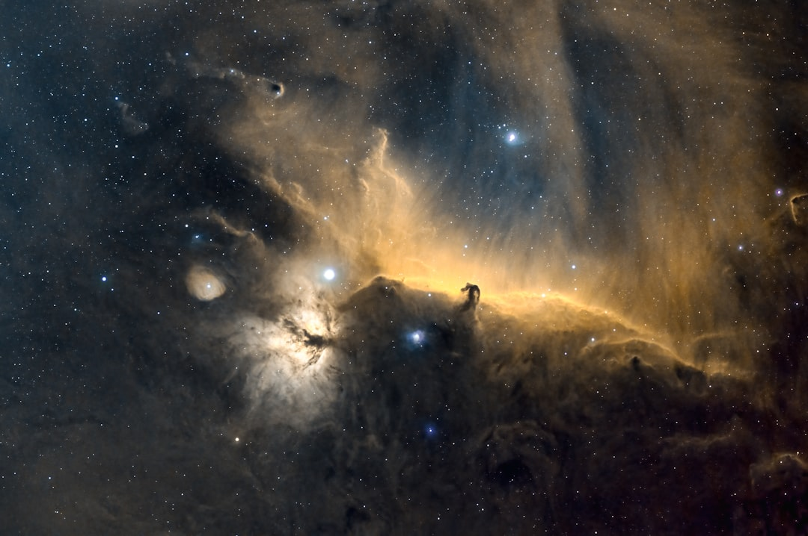

### Cosmic Ray Precognition: A New Frontier in Science or a Corporate Ploy?
### Cosmic Ray Precognition: A New Frontier in Science or a Corporate Ploy? In the age of rampant capitalism and corporate control over scientific inquiry, every breakthrough needs a critical lens. Enter the intriguing phenomenon of cosmic ray precognition — a tantalizing blend of quantum mechanics and consciousness that has scientists buzzing and corporate interests licking their lips. But as with many things in today's world, can we trust the purity of this research, or is it just another distraction in an exploitative system? #### What Are Cosmic Rays? Before diving deep, let’s clarify what cosmic rays are. These high-energy particles from outer space bombard our atmosphere, engaging in a constant battle with Earth’s magnetic shield. They may seem purely scientific, but their implications reach into the psychological, philosophical, and even spiritual realms. Yet, in the hands of capitalists, even the most profound discoveries can become commodities. #### The Allure of Precognition Recent experiments suggest that cosmic rays may have a role in precognition — the purported ability to foresee or anticipate future events. Researchers are toying with the idea that these cosmic particles could be influencing human cognition in ways we are just beginning to understand. This notion challenges the very fabric of our understanding of time and consciousness. But who stands to gain from this concept? The glorious potential of this inquiry can't overlook the ever-watchful eye of corporate interests that could hijack these findings. Is it possible that, amidst the excitement, the implications of precognition fuel the fires of commodification? Imagine corporations developing technologies based on these principles. We would see a new wave of “predictive analytics,” where everything from stock market trends to consumer behavior is manipulated under the guise of scientific advancement. Instead of liberation, we face greater enslavement to a system that thrives off surveillance capitalism, where our own cognitive abilities are weaponized against us. #### Science vs. Corporate Interests The ongoing corporate infiltration of scientific research is worrying. Funding from private entities often comes with strings attached, tainting the purity of scientific inquiry. Imagine if discoveries regarding cosmic ray precognition are co-opted and controlled by mega-corporations like tech giants. Will the quest for knowledge benefit humanity, or will it further entrench inequality by enriching a select few? This is where the issue of ethics arises. The scientific community needs to adopt stringent measures to ensure that discoveries are for the collective good. However, with systemic pressures to monetize research, many scientists find themselves in an ethical bind. It’s time for academia and independent researchers to band together, create open-source platforms, and ensure that findings related to cosmic rays and precognition are free from corporate chains. #### Historical Context: Manipulation of Scientific Knowledge History is littered with examples where science has been warped to further corporate greed. From the tobacco industry’s efforts to obfuscate the dangers of smoking to the pharmaceutical giants manipulating data about painkillers, we are reminded that not all research serves the public good. The relentless pursuit of profit can overshadow truth and integrity. When examining cosmic ray precognition, are we sure that this research isn’t being enshrined in a similar narrative? Institutions pumping money into this research are often the same that benefit from anti-ethical practices, so it’s critical to hold them accountable. The social responsibility of the scientific community should take precedence over profit margins. #### The Fight for Ethical Science To truly embrace the potential of cosmic ray precognition, we need a revolution — a movement that prioritizes scientific inquiry for the people rather than for profit. Scientists must band together, establish ethical guidelines, and shield their research from exploitation by corporations. The collaboration of scientists, ethicists, and activists will play a crucial role in shaping the future of this inquiry. The fight for ethical science extends beyond cosmic rays. It is a broad struggle against all forms of manipulation within the scientific community. It’s a demand for transparency, open access to information, and a commitment to prioritizing the public good over corporate profits. #### Toward a Collective Understanding In conclusion, while cosmic ray precognition presents a groundbreaking opportunity for understanding human consciousness and our connection to the universe, we must tread carefully. This fascinating premise should not be reduced to a mere vehicle for profit but should serve as a stepping stone toward the liberation of human potential. As investigations continue, let’s remain vigilant and advocate for a research environment that is ethical, transparent, and committed to the advancement of collective knowledge. It
Updated 2025-08-03 08:58 UTC